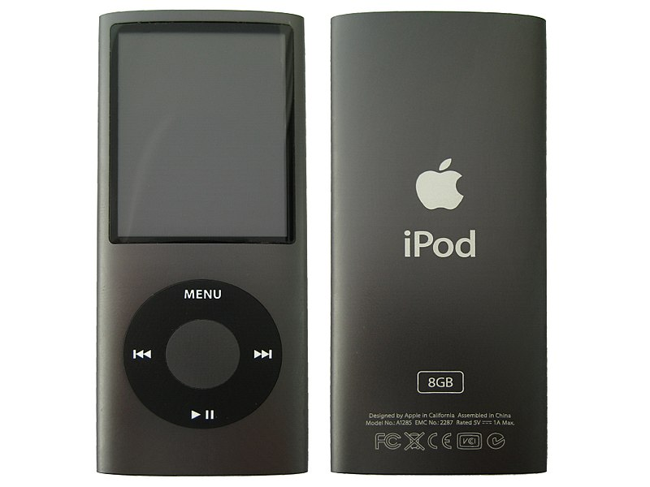
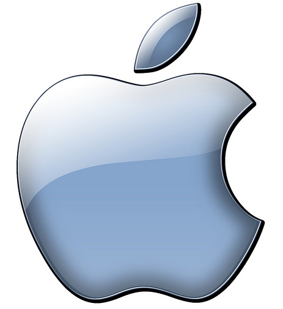
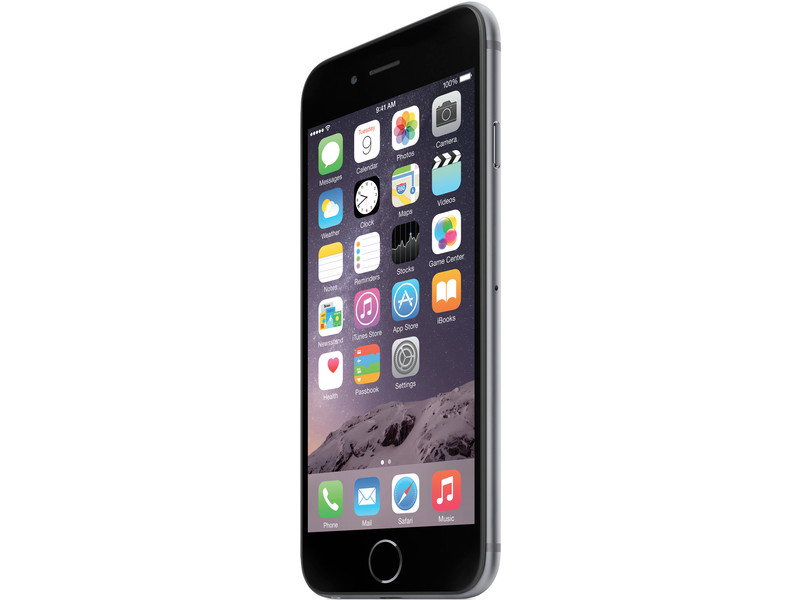
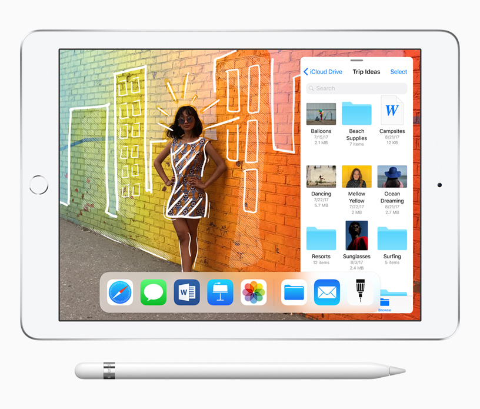
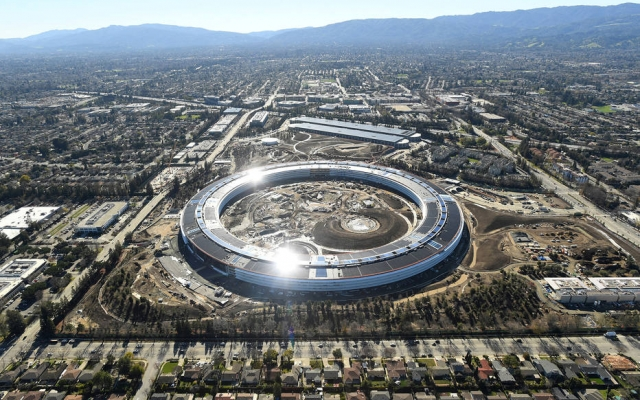

inicio
Biografia de Steve Jobs
Steve Jobs (1955-2011) foi um empresário norte-americano, fundou a Apple. Criou o "Macintosh", o "iPod", o "iPhone" e o "iPad". A Apple revolucionou a indústria de computadores pessoais, os filmes de animação, o mundo da música e dos telefones celulares.
 
 
Infância e formação
Steve Paul Jobs (1955-2011) nasceu em São Francisco, Califórnia, no dia 24 de fevereiro de 1955. Filho do sírio Abdulfattah Jandali e de Joanne Schieble foi adotado, por Paul Jobs, mecânico e membro da Guarda Costeira e da contadora Carla Jobs. A família morava em Mountain View, na Califórnia, dentro da área que mais tarde se tornaria conhecida como Vale do Silício. Ainda pequeno, viu seu pai montar e desmontar aparelhos eletrônicos na garagem da família.

Depois do curso básico, Jobs cursou a Homestead High School entre 1968 e 1972. Nessa época, conheceu Steve Wozniak (1950), que estudava na Universidade da Califórnia, em Berkley e, era especialista em fazer programas e circuitos integrados. Concluído o curso médio, Jobes, matriculou-se na Reed College. Depois de seis meses abandonou o curso, mas continuou frequentando a faculdade, como ouvinte, das aulas de caligrafia, que posteriormente destacou como importante para sua formação.